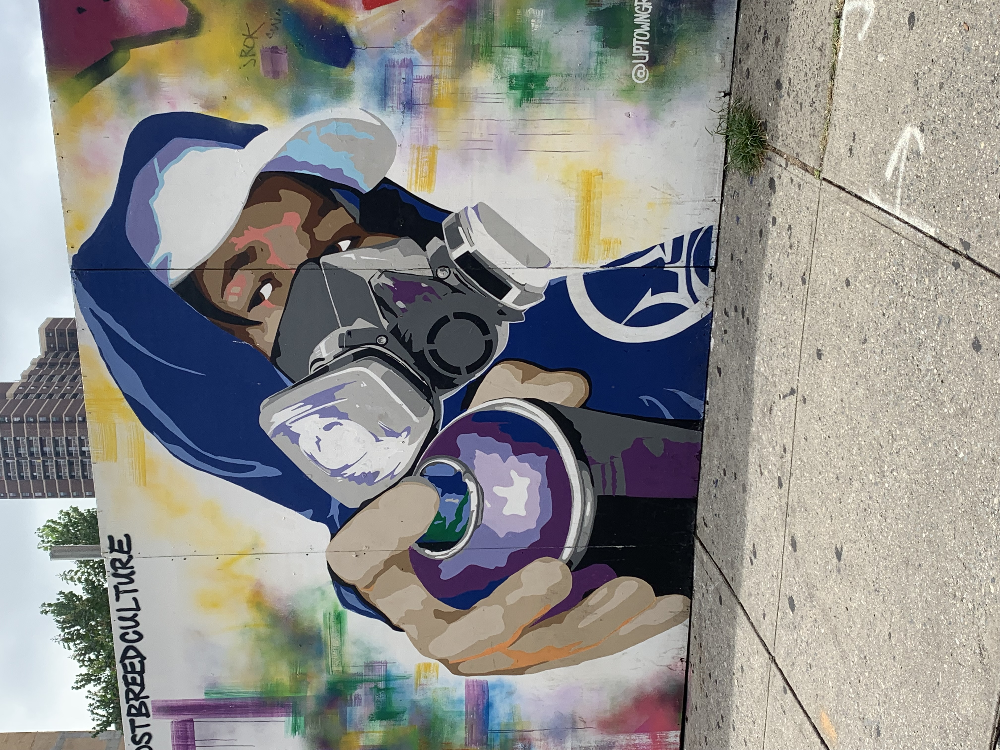

This mural of a girl holding a heart demonstrates the artistic vision of the locals of Harlem.
Harlem is well known for its artists, especially those who worked during the Harlem Renaissance.
Artists such as Langston Hughes (Poet), Zora Neale Hurston (Author & Filmmaker), Aaron Douglas (Painter), and
Lois Mailou Jones (Artist & Educator) created art in Harlem.

Murals speak to the locals' voice to the Harlem community.
They demonstrate the importance of art and education in Harlem.
Murals also give artists the ability to show the world their artistic vision.
In the Harlem Renaissance, murals were also important.
They depicted how important unity in the African American Community is.
The Black Panthers were an example of unity that helped established the first free breakfast program.
This program continues today.
The Black Panther Party was created in 1966 in California by Huey P Newton and Bobby Seale.
The party was assembled to protect residents from police brutality.
The Black Panther Party created a ten-point program.
The ten-point program included wanting freedom, full employment for African American people,
ending robbery within their community, decent housing, not wanting Black men included in the draft in the military,
an end to police brutality, freedom for men incarcerated, and wanting equality in justice.
.JPG)
Many buildings in Harlem are being gentrified.
Luxuorious buildings are being created for new residents because most long term locals can not afford to live in those buildings.
Buildings in Harlem are very famous. For example, the Apollo Theather was well known for its amateur night.
Many artists such as singers and comedians would show off their talents.
There were amateur night winners such as The Jackson 5, Ella Fitzgerald, Billie Holiday, Celia Cruz, and many more.
Preserving the history of these buildings and keeping locals in Harlem are important since without them there wouldn't be any history in those buildings.

This image demonstrates the everyday life of residents that live in Harlem.
People have forgotten how rich the history of Harlem is because they are focused on their present experience in Harlem.
However, people wouldn't be paying millions for a brownstone if living in Harlem was not important.
One forgotten moment was the Harlem Cultural Festival from June 29 to August 24, 1969.
Over 30,000 people attended and several artists within the Black community such as B.B. King, Mongo Santamaria, Stevie Wonder,
Gladys Knight, and many more. The genres that were played during the Harlem Cultural Festival were R&B, rock, gospel, soul & funk, and blues.
.jpg)
Landlords started to find ways to increase the tenants' rent.
When rent is controlled, an apartment would cost about $1000. With non-controlled rent, the apartment can cost $5000 a month.
From 2000 to 2005, 32,000 African Americans moved out of Harlem because of the rent increase alone.
During this time, 22,000 White, Latinx, and Asians moved in as residents.
Landlords know what they are doing and often new residents do too. Why would they contribute to gentrification if it's not creating a positive change?